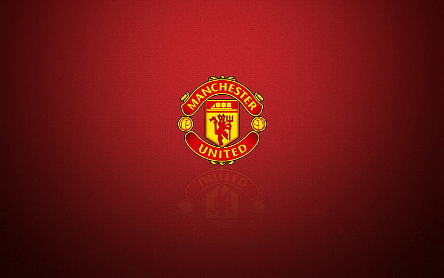

Манче́стер Юна́йтед» (англ. Manchester United Football Club) — англійський футбольний клуб з осідком в Олд-Траффорд, районі метрополійного Манчестера. Заснований під назвою «Ньютон-Гіт» у 1878 році, клуб змінив свою назву на «Манчестер Юнайтед» 1902 року.
«Манчестер Юнайтед» — один із найуспішніших англійських клубів за кількістю трофеїв за всю історію, а за останні 20 років — найуспішніший клуб в Англії. Команда виграла 38 значних кубків з жовтня 1986 року, коли команду очолив Сер Алекс Фергюсон.